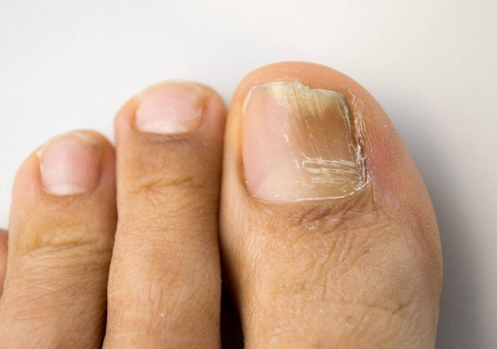
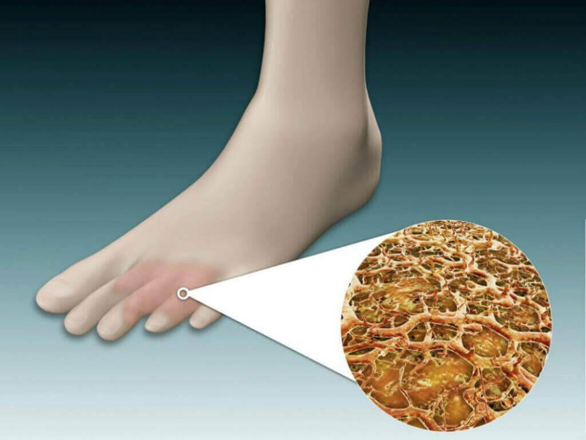
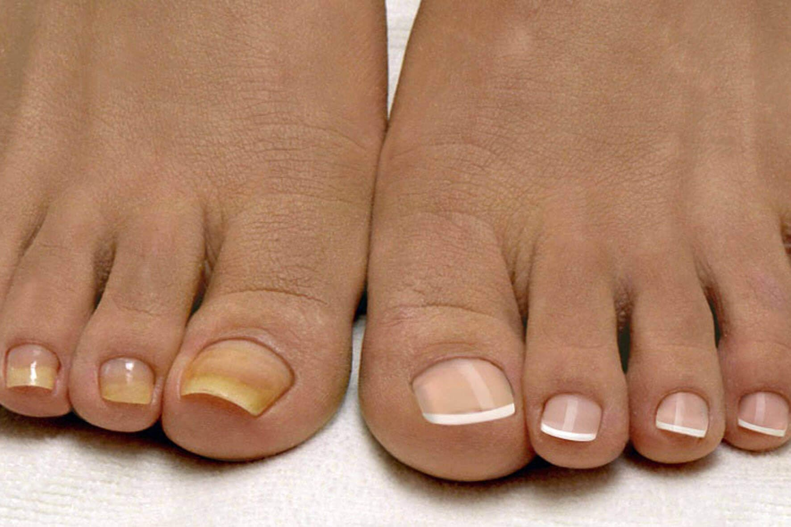

The most common form of fungus is a toe fungus:

Fungal infection has led to tissue necrosis that will cause the leg to be amputated: 
Fungus feeding on human soft tissue: 
Fungus has eaten the lungs from the inside:
the fungus has invaded the body and caused damage to the lungs
the fungus has invaded the body and caused damage to the lungs
This is the most effective treatment for fungal diseases today. I am talking about AnatomyOne Nail Fungus Remover, a new-generation product developed in independent research laboratories. This medicine has been prepared by a team of the very best doctors in Philippines. It is 10 times more effective than common medicines and cosmetic treatments. It does not have any side effects, does not cause addiction and helps the body to develop immunity against fungal bacteria, eliminating the risk of re-infection.
The secret of it being so effective lies in the structure of our body. It is so difficult to get rid of nail fungus, because it remains in the tissues within the body. The fungus usually returns after discontinuing the medicines being taken for its treatment. Another problem is that our body's immune system cannot fight it on its own. At best, the body can only slow down the rate of growth of fungal infections. When immunity is weak, the fungus spreads very rapidly, leading to death.
With AnatomyOne Nail Fungus Remover, the body is able to produce the special antibodies that destroy fungi everywhere in the body. With this, fungus is completely removed from the body. Besides, the antibodies continue to develop even after discontinuing the treatment. This drug increases the body's response against fungal infection 10 times. After this you are not likely to get an infection again. A single course of treatment with AnatomyOne Nail Fungus Remover allows the body to completely get rid of fungal infections from your body.
Why is AnatomyOne Nail Fungus Remover more effective than other antifungals sold in pharmacies?
You must understand that infections of fungus are living bacteria and they adapt to their environment like any other living creature. Most antifungal medicines were developed 20 to 30 years ago and fungal infections have become resistant to most antifungal medicines over the years. AnatomyOne Nail Fungus Remover's formula is brand new – it has been created after studying the causes of more than 6,000 types of fungus. Due to its unique and new formula, this medicine cleanses the fungus not only from the outside on the nails and skin, but also from inside the body.
Its effectiveness is proven in our research facility. It has undergone clinical trials in which several security personnel participated, who were taking other popular antifungal treatments. Its results have confirmed the powerful effect of AnatomyOne Nail Fungus Remover.
Infection in the body does not progress and the patient is completely cured. No trace of infection remains after the treatment. This is the reason why the patient recovers and returns to a healthy life. This also enables the body to develop immunity against fungal infections, meaning that you won't have them again.
This formula has very positive effects on the body:
1. It destroys fungal infections.
2. Itching, scabbing and burning on the skin of the feet stop after applying it for the first time.
3. It rapidly heals nails and foot sores and cracks.
4. It eliminates bad odour and normalises the activity of sweat glands.
5. It does not allow disease-causing bacteria to breed and stops their growth.
6. It normalises immunity and helps in curing chronic fungal diseases.
7. It clears fungus waste products from the blood and lymph.
8. This helps the body to develop immunity against all known types of fungal bacteria.
9. There is no re-infection due to its convenient packaging.
When the course of treatment is completed according to the instructions, all symptoms of fungal disease disappear.
Are there any contraindications? Why is it being sold at such a high discount?
There are no contraindications. This formula is hypoallergenic. It can also be used if you are allergic to other medicines. It is also completely safe for the liver, which is most affected when taking oral medicines.
How can people get AnatomyOne Nail Fungus Remover? Do you need to show proof of identity or need a doctor's prescription?
AnatomyOne Nail Fungus Remover will be shipped directly from our warehouse and delivered by courier. If we sell it from local shops, it will not be the correct way of doing it. We do not want people to que up for this. Patients suffering from fungus undergo so much agony every day and it would not be right to make them que up for hours. These days, most people are suffering and it is better if everybody is spared this trouble. Ordering medicines online is very easy, just fill in your name and phone number on the order form and wait for our call. Our specialists will talk to you and inform you about the course of treatment that is suitable for your situation. Tell us your address and when you want the delivery. After this, you just have to wait for the order to be delivered by courier.
The order form has to be filled in directly on the website, which will directly process orders coming from Philippines. As I said earlier, you just have to advise us of your name and phone number.
UPDATE: Stock is limited! Offer end date At the request of Dr. Asuncion, we are providing the order form for AnatomyOne Nail Fungus Remover:

34 comments today

Mary Reyes
If an offer is still available, then I will order it. Looking at the photos, it seems to work.
7 minutes ago
Elsie Gallardo
Guys, where did you order this from? I couldn't find it in any pharmacy and I'm afraid to order online. I want an original product, otherwise the money will be wasted.
27 minutes ago
Dr. Asuncion
typing a comment
.
.
.
I repeat, AnatomyOne Nail Fungus Remover can only be ordered directly from our manufacturing company's website. To ensure that you are receiving the original product, please fill in the form above. With this special offer, you can order at 50% discount, but the offer is limited, so hurry up and place your order!
And beware of fakes.
Yours, Dr. Asuncion.
just now
Marjorie Manzano
I read this article and placed my order immediately. I have tried many types of medicines and sometimes I would get some relief, but nothing offered a permanent solution. Everyone told me that toe fungus is very difficult to treat. Then, I ordered AnatomyOne Nail Fungus Remover, which arrived very quickly. Thanks for this! Now I am finally healthy and can live a normal life!
31 minutes ago
Crisanto Mata
I do not know how many years I have been trying to get rid of this fungus now, but nothing has worked. Then I applied AnatomyOne Nail Fungus Remover, this treatment is explained in this article and it has cured me within one month. I wish I had tried it before.
39 minutes ago
Dr. Asuncion
Crisanto, when such a formula has to be developed, a lot of money is needed. Therefore, it has taken us a while to develop it. The good news is that now people can deal with their fungal problems quickly.
Yours, Dr. Asuncion.
36 minutes ago
Rhea Yap
My husband had fungus for three years. He was having a lot of problems. His toes turned yellow and smelled very bad. At first he used some kind of drops and also brought some antifungal polish. I do not remember their brand names, but he used them to no avail and he had given up hope. After this, he tried AnatomyOne Nail Fungus Remover on the advice of a friend. Just take a look at the results he got within one week.
48 minutes ago
Dr. Asuncion
Rhea, as far as I know, the drug companies are just interested in raising the prices. How dare they rob people of their money? I would definitely complain about it.
Yours, Dr. Asuncion.
36 minutes ago
Hazel Carpio
Its results have far exceeded my expectations. My toe fungus went away in two weeks! I have now also ordered some for my friend and will give it to her as a gift.
53 minutes ago
Dionisio Cinco
I took Exoderil and Lamisil and also brought a nail varnish. But they did not work...
55 minutes ago
Angelina Baltazar
Thank you very much, Dr. Asuncion. If not for your advice I would never have tried this medicine! My toes were always broken and I used to be in a lot of pain. I tried antifungal nail polish and also took medicines. Nail polish provided relief only for a short while, but nothing more. Now I apply AnatomyOne Nail Fungus Remover and it is having a great effect.
By the way, my order arrived very quickly.
57 minutes ago
Ofelia Oliveros
Thanks, AnatomyOne Nail Fungus Remover worked for me and did not take much time! I ordered it directly from the manufacturing company! Do not delay in its treatment, fungal infection is something that should be attended to immediately because it will keep killing you slowly from the inside.
An hour ago
Ivy Villar
Hey guys, does this work? I've tried many things prescribed by doctors, but all have proven useless.
An hour ago
Rosa
typing a comment
.
.
.
Ivy, it does work, there is no doubt about it. It is very effective, but at the same time completely natural. Presently, there is a good offer on so you must hurry up! My mother-in-law has also applied AnatomyOne Nail Fungus Remover and the fungus on her feet has gone.
just now
Sherwin Rico
Wow, I'm not the only one with this problem. Thank God I started applying AnatomyOne Nail Fungus Remover one month ago and now my toe fungus is completely gone. I have tried many types of medicines and ointments, but this was the only one that gave the best and the fastest results.
An hour ago
Bernard Feliciano
This thing is amazing, both my wife and I had applied it because we had a horrible infection. So far everything is going well and our entire family is free from fungus. Now we can also go to the public swimming pool and steam bath.
An hour ago
Aiza
This is amazing and everyone should give it a try. I was really suffering from the fungus in my feet. I wasn't able to wear sandals nor could I go to the swimming pool. But after applying AnatomyOne Nail Fungus Remover for three weeks, I started feeling better. There is no sign of toe fungus now!
2 hours ago
Celso
Aiza, is it really so good? If so, I will also place an order?
An hour ago
Annabelle
Thanks, David, I placed my order on the order form.
How long does delivery take?
2 hours ago
David
Annabelle, it takes about a week :)
2 hours ago
David
Annabelle, fill in the form mentioned above, but you will have to hurry because the offer is going to end soon. I have got a lot of relief.
3 hours ago
Joven Bello
Please help me! I have fungus and tried everything, but nothing helps. It hurts a lot and looks disgusting. This is affecting my daily life and I do not know what to do. I have tried many types of medicines so far, but nothing has helped :(
3 hours ago
Aldrin
Joven, please try AnatomyOne Nail Fungus Remover, it really does work. And its prices are also reasonable. I have applied it and got relief. I had fungus in my legs and started having problems while walking. I had almost given up. My mother found out about AnatomyOne Nail Fungus Remover from somewhere and insisted that I try it once. By the way, my mum bought it one month ago at a regular rate. I have been applying it for three weeks and will do it for one more week. Complete treatment lasts one month. I have cut off the nail that was damaged by the fungus, but there is still a lot of fungus remaining on the thumb. I am hoping that it will also come off in the next week. I tried many types of medicines earlier too, but all were useless.
I have even put AnatomyOne Nail Fungus Remover in my shoes to eliminate any fungus that would have remained in there.
2 hours ago
Gil
Thank you very much, Dr. Asuncion! I tried it out and got so much relief. Let's see what happens next week. It's a little early to say now, but I will keep you informed. My toes are starting to look better. Hope you get well!
3 hours ago
Dr. Asuncion
Gil, don't worry. Just keep using AnatomyOne Nail Fungus Remover. It's necessary to follow the instructions while using this medicine.
Yours, Dr. Asuncion
3 hours ago
Rachel Prado
Thank you very much for giving information about this medicine. I was looking for something similar. Now waiting for the order to arrive! Thanks!
3 hours ago
Riza Umali
The same thing happened to me! My AnatomyOne Nail Fungus Remover has just arrived and I have started applying it. Its effect is clearly visible on my skin and thumbs!
4 hours ago
Order AnatomyOne Nail Fungus Remover
My toe fungus went away in a month! Thanks!